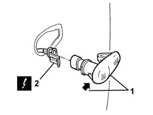
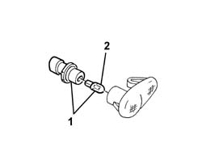

5550C22 L/H OR R/H SIDE FLASHER (ONE) - R+R
- Path
- Procedures > 55 ELECTRICAL EQUIPMENT > 5550 WARNING AND MANOEUVRING INDICATORS > 5550C TURN SIGNAL/HAZARD WARNING LIGHTS > 5550C22 L/H OR R/H SIDE FLASHER (ONE) - R+R
- Kind
- repair procedure (removal / refitting; the operation number is the code)
- Applies to
- all engines; all production periods
- Interactive page
- https://sloeber94.github.io/elrnDB-aGt/en/#/125001692
Applies to: all engines; all production periods
 Removing
Removing
 Refitting
Refitting1. Prise up the side repeater unit at the side indicated.
2. Disconnect the electrical connection and recover the led.
Name | Connector | |
|---|---|---|
2 | Left side repeater | See F20 LEFT SIDE REPEATER |
Name | Connector | |
|---|---|---|
2 | Right side repeater | See F21 RIGHT SIDE REPEATER ( FRONT ) |

Applies to: all engines; all production periods
1. If necessary, rotate the bulb holder in an anti-clockwise direction (90°) and extract it.
2. Extract the bulb from the bulb holder. The bulb is a press fit.

Applies to: all engines; all production periods
Refitting
RemovingCheck that the parts of the side repeater are not damaged and that the bulb is working properly.
If removed, insert the bulb in the bulb holder and reassemble the side repeater.
Connect the electrical connection.
Fit the side repeater.
Test the operation of the side repeaters.